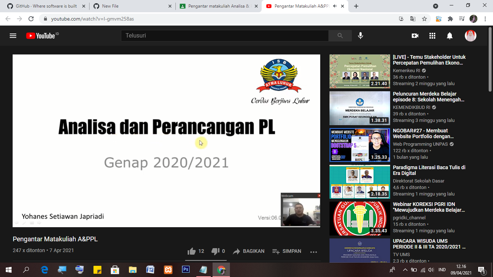

"Hasil Saya Menyadur"
1)Mendownload dan menonton penjelasan materi di channel pengajar.
2)Di materi terdapat perkenalan pengajar dan diajarkan etika mahasiswa dalam berkomunikasi.
3)Perkuliahan semester genap tahun ajaran 2020/2021 dimulai senin, 5 April 2021 dan tetap mematuhi 5M(Memakai masker, Mencuci tangan,
Menjaga jarak,Menjauhi kerumunan, Membatasi mobilitas) serta perkuliahan dilakukan secara online dan offline (praktikum).
4)Kegiatan perkuliahan antara lain melalui
a. Classroom (Instruksi kehadiran, kuis, soal + Thread pengumpulan jawaban dan materi)
b. Youtube (video penjelasan pembelajaran, dari penjelasan video, disadur pada setiap pertemuan di taruh di github, dan sesuai instruksi pengajar)
c. Telegram Channel & group ( koordinasi + diskusi)
5)Membuat tim kelompok 3 orang masing-masing untuk presentasi sabagai nilai UAS nanti, sedangkan untuk UTS nya dari individu
6)Untuk kehadiran dilihat dari yang mengumpulkan saduran ,sedangkan untuk nilai tugas dilihat dari kualitas saduran
7)Penilaian nilai akhir yakni kehadiran 10% jika kehadiran <70 maka dinyatakan tidak lulus, tugas 20%, uts 30%, dan uas 40%(+/- sikap) dan
penjelasan penentuan nilai akhir serta tujuan perkuliahan dan penggunaan software yang akan digunakan
8)Selanjutnya membuka github.com dan daftar akun terlebih dahulu
9)Pengajar menjelaskan kegiatan apa saja yang akan kami pelajari di semester ini, salah satunya dapat dilihat di web mahasiswa, serta materi,rps,channel youtube,
link classroom,link telegram dan link groub wa juga bisa didapatkan di web mahasiswa
10)Setelah itu mengerjakan saduran dan mengirim link saduran ke pengajar
